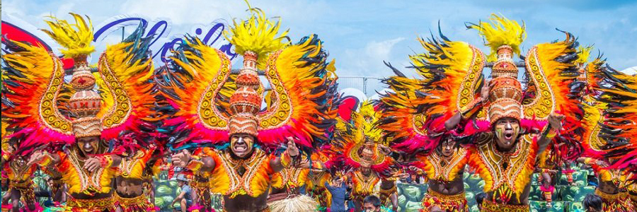
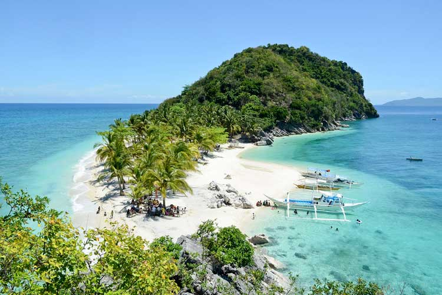
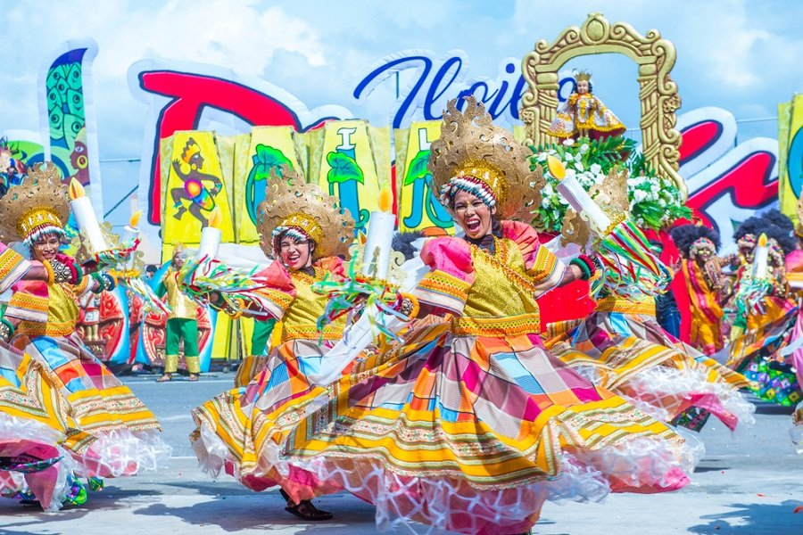
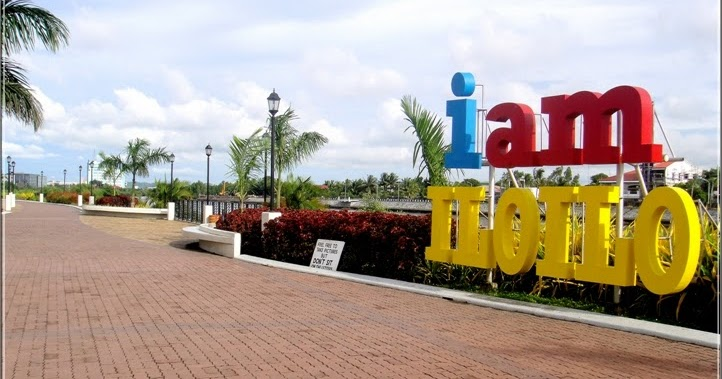
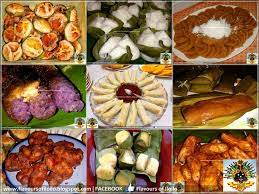

1 / 6

2 / 6

3 / 6
4 / 6

5 / 6
6 / 6




Iloilo is a province of the Philippines, located in the center of the Philippine archipelago. The province comprises the southeastern part of Panay Island with island-province of Guimaras just across its coast. The capital city of the province of Iloilo is the City of Iloilo. It is nicknamed “the Heart of the Philippines”.
Gigantes Island
also known as Islas de Gigantes or the islands of giants,
is a remote group of islands located off the coast of Carles and Estancia towns in northeastern Iloilo,
Philippines. It takes at least 5 hours to get there from Iloilo City.
Those willing to go the 'extra mile'
can look forward to enjoying beautiful seascapes and a laid-back island lifestyle that Gigantes has to offer. The islands are blessed with pristine white sand beaches, bountiful fresh seafood, and jagged rock formations shrouded by mystical tales of locals.
The Dinagyang Festival
is an important function in the Philippines’ events calendar.
It’s marked on the fourth Sunday of January yearly, right after Sinulog.The festival is held to show reverence of Santo Nino as well as to mark the onset of the arrival of Malay immigrants. This is an indelible part of the Philippines’ history, so much so that locals sometimes use it as a reference point for the historical events that led to the establishment of the festival as a prominent practice.
The fun in this, especially for visitors, lies in getting acquainted with the local culture as well as getting a glimpse into the daily happenings in the country.
The most popular Lapaz Batchoy
is one of Iloilo’s best-known signature dishes and a must-try delicacy served in restaurants all over Iloilo City.
This noodle soup is made with miki, (round noodles), pork organs (liver, spleen, kidneys and heart), chicken stock, beef loin, shrimp stock, and garnished with chicharon (pork cracklings).
It is best eaten at the batchoyan (batchoy stalls) in La Paz Market where it originated. The most famous places to eat batchoy are Ted’s, Deco’s, Netong’s, and Inggo’s. The “original” creator of the dish is not certain, but you may judge for yourself which among them serves the tastiest.